I selected the Lyme disease public use line-listed data without georgraphy, 2022 - 2023 dataset, available on the Center for Disease Control and Prevention’s website. This contains publc health surveillance data that was reported to the CDC by U.S. states and territories through the National Notifiable Diseases Surveillance System (NNDSS). Data include both demographic characteristics (age, sex, race, ethnicity) and clinical characteristics (reported year, case status, omonth of illness onset, presecence of symptoms).
The dataset can be accessed through the following link: https://data.cdc.gov/d/9mtj-y2ba
Loading the Data
# Load libraries.library("tidyverse")
── Attaching core tidyverse packages ──────────────────────── tidyverse 2.0.0 ──
✔ dplyr 1.1.4 ✔ readr 2.1.6
✔ forcats 1.0.1 ✔ stringr 1.6.0
✔ ggplot2 4.0.1 ✔ tibble 3.3.1
✔ lubridate 1.9.4 ✔ tidyr 1.3.2
✔ purrr 1.2.1
── Conflicts ────────────────────────────────────────── tidyverse_conflicts() ──
✖ dplyr::filter() masks stats::filter()
✖ dplyr::lag() masks stats::lag()
ℹ Use the conflicted package (<http://conflicted.r-lib.org/>) to force all conflicts to become errors
library("dplyr")library("ggplot2")
# I downloaded the dataset from the CDC's website and put it into the cdcdata-exercise folder. I want to double-check that my .CSV file is accessible.list.files()
# Load the dataset.lymedisease_rawdata <-read_csv("Lyme_disease_public_use_line-listed_data_without_geography,_2022-2023_20260211.csv")
Rows: 152018 Columns: 14
── Column specification ────────────────────────────────────────────────────────
Delimiter: ","
chr (13): Case_status, Sex, Age_cat_yrs, Race, Ethnicity, Onset_month, EM, A...
dbl (1): Year
ℹ Use `spec()` to retrieve the full column specification for this data.
ℹ Specify the column types or set `show_col_types = FALSE` to quiet this message.
# Determine the number of rows and columns. There should be 152K rows and 14 columns. dim(lymedisease_rawdata)
# A tibble: 6 × 14
Year Case_status Sex Age_cat_yrs Race Ethnicity Onset_month EM
<dbl> <chr> <chr> <chr> <chr> <chr> <chr> <chr>
1 2023 Confirmed Male 5-9 White Non-Hispanic 4 Unknown
2 2023 Probable Male 35-39 Unknown Unknown Unknown Unknown
3 2023 Probable Male 25-29 Unknown Unknown Unknown Unknown
4 2023 Probable Female 55-59 Other Unknown Unknown Unknown
5 2023 Probable Male 30-34 Unknown Unknown Unknown Unknown
6 2023 Probable Male 30-34 White Unknown Unknown Unknown
# ℹ 6 more variables: Arthritis <chr>, Facial_palsy <chr>, Radiculo <chr>,
# Lymph_men <chr>, Enceph <chr>, Av_block <chr>
Several variables contain a number of observations coded as Unknown, indicating incomplete reporting in sureillance data.
# Explore the data to see how many observations are coded as Unknown per category. Add a line to convert the tibble to a dataframe to obtain a summary table of all counts and percentages for Unknown without R trunacting it.# Note that Year is numeric; there are no observations coded as Unknown. unknown_summary <- lymedisease_rawdata %>%summarise(case_status_unknown =sum(Case_status =="Unknown"),sex_unknown =sum(Sex =="Unknown"),age_unknown =sum(Age_cat_yrs =="Unknown"),race_unknown =sum(Race =="Unknown"),ethnicity_unknown =sum(Ethnicity =="Unknown"),onset_unknown =sum(Onset_month =="Unknown"),em_unknown =sum(EM =="Unknown"),arthritis_unknown =sum(Arthritis =="Unknown"),facial_palsy_unknown =sum(Facial_palsy =="Unknown"),radiculo_unknown =sum(Radiculo =="Unknown"),lymph_men_unknown =sum(Lymph_men =="Unknown"),enceph_unknown =sum(Enceph =="Unknown"),av_block_unknown =sum(Av_block =="Unknown"),# Report as percentage.case_status_unknown_pct =mean(Case_status =="Unknown") *100,sex_unknown_pct =mean(Sex =="Unknown") *100,age_unknown_pct =mean(Age_cat_yrs =="Unknown") *100,race_unknown_pct =mean(Race =="Unknown") *100,ethnicity_unknown_pct =mean(Ethnicity =="Unknown") *100,onset_unknown_pct =mean(Onset_month =="Unknown") *100,em_unknown_pct =mean(EM =="Unknown") *100,arthritis_unknown_pct =mean(Arthritis =="Unknown") *100,facial_palsy_unknown_pct =mean(Facial_palsy =="Unknown") *100,radiculo_unknown_pct =mean(Radiculo =="Unknown") *100,lymph_men_unknown_pct =mean(Lymph_men =="Unknown") *100,enceph_unknown_pct =mean(Enceph =="Unknown") *100,av_block_unknown_pct =mean(Av_block =="Unknown") *100 )
# Convert to data frame.unknown_summary_df <-as.data.frame(unknown_summary)# View table.unknown_summary_df
I will focus on the following variables for this exercise: - Year. This is the reporting year. No observations coded as Unknown. - Case_Status. This is the surveillance case classification as determined by local and state public health authorities. No observations coded as Unknown. - Sex. This is the patient’s sex. 1.02% observations coded as Unknown. - Age. This is the patient’s age, in 5-year age categories. 0.38% observations coded as Unknown. - Race. This is the patient’s race. 43.2% observations coded as Unknown.
All other variables have over 50% of observations coded as Unknown.
Cleaning the Data
# Next, clean and process the dataset.# Convert Unknown to NA.lymedisease_cleandata <- lymedisease_rawdata %>%select(Year, Case_status, Sex, Age_cat_yrs, Race) %>%# Select variables.mutate(Case_status =ifelse(Case_status =="Unknown", NA, Case_status),Sex =ifelse(Sex =="Unknown", NA, Sex),Age_cat_yrs =ifelse(Age_cat_yrs =="Unknown", NA, Age_cat_yrs),Race =ifelse(Race =="Unknown", NA, Race) ) %>%# Convert to factors for categorical analysis.mutate(Case_status =as.factor(Case_status),Sex =as.factor(Sex),Age_cat_yrs =as.factor(Age_cat_yrs),Race =as.factor(Race) ) %>%# Less than 2% of observations under the Sex and Age categories are coded as NA. I do not feel that imputing missing values is appropiate with this dataset, so I will instead remove the missing data for these categories. I will keep the missing data for the race category, as I do not feel that imputing missing data or removing the data entirely is appropiate here.filter(!is.na(Case_status), !is.na(Sex), !is.na(Age_cat_yrs))glimpse(lymedisease_cleandata)
# Explore the distribution of categorical variables.ggplot(lymedisease_cleandata, aes(x = Case_status)) +geom_bar(fill ="steelblue") +labs(title ="Distribution of Case Status", y ="Count", x ="Case Status")
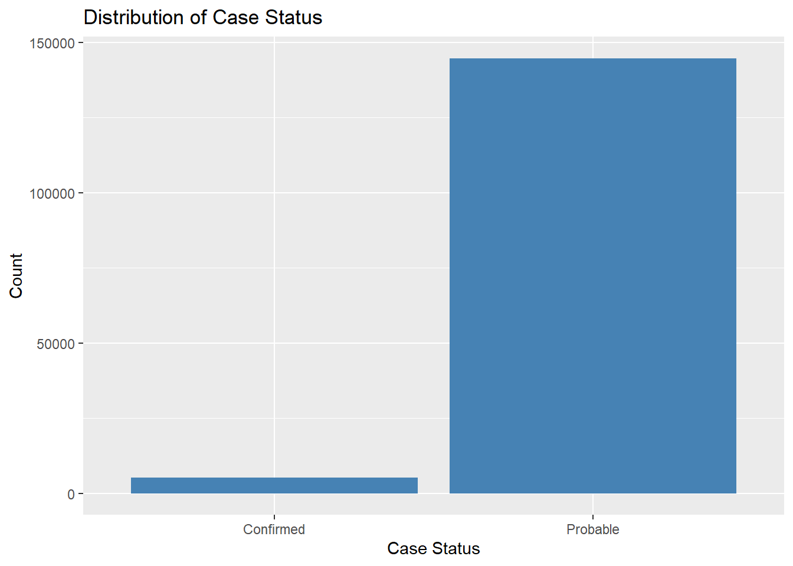
# Sex distributionggplot(lymedisease_cleandata, aes(x = Sex)) +geom_bar(fill ="salmon") +labs(title ="Distribution of Sex", y ="Count", x ="Sex")
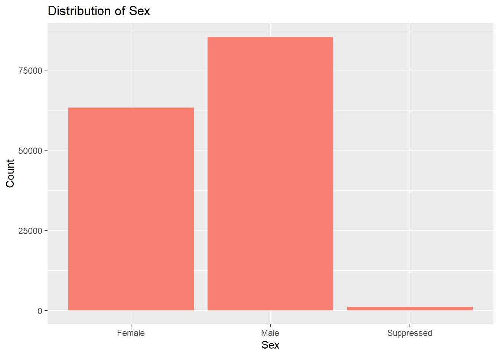
# Age distributionggplot(lymedisease_cleandata, aes(x = Age_cat_yrs)) +geom_bar(fill ="forestgreen") +labs(title ="Distribution of Age Categories", y ="Count", x ="Age Category") +theme(axis.text.x =element_text(angle =45, hjust =1))
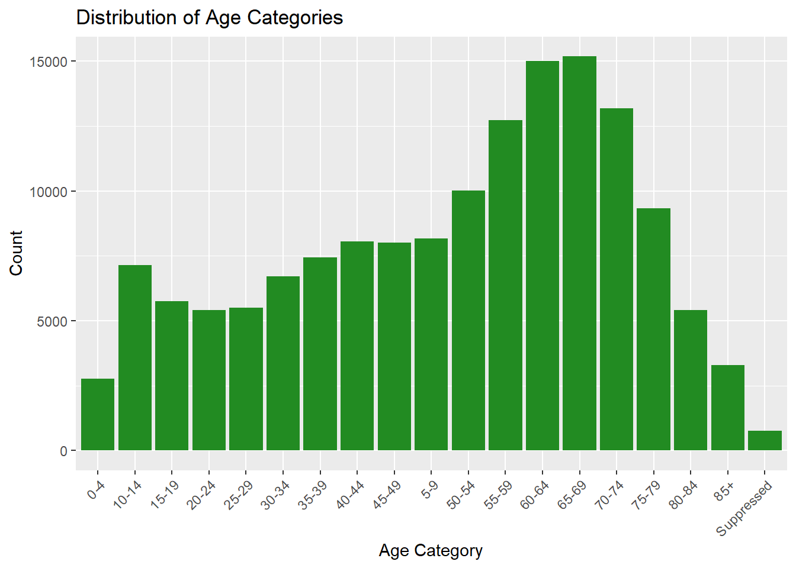
# Race distributionggplot(lymedisease_cleandata, aes(x = Race)) +geom_bar(fill ="purple") +labs(title ="Distribution of Race", y ="Count", x ="Race") +theme(axis.text.x =element_text(angle =45, hjust =1))
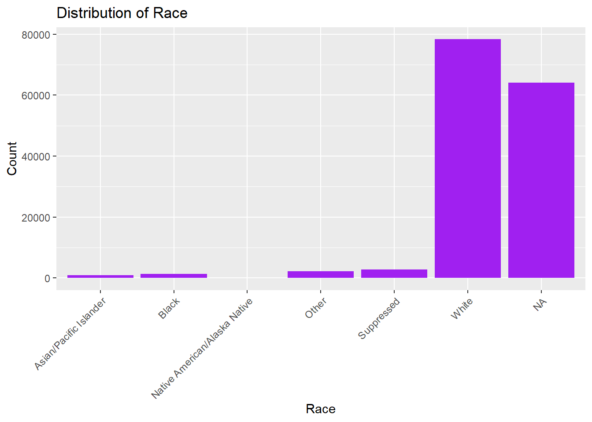
The CDC classified Lyme disease cases as either confirmed or probable. When assessing for Lyme disease, health care providers will consider (1) signs and symptoms of the disease, (2), exposure to infected blacklegged ticks, and (3) results of laboratory tests. Confirmed cases must met all three criteria. In Fig. 1, we can see that most reported cases are coded as probable, rather than confirmed. Probable cases dominate as many patients never get a lab test – or the results of the lab test were not in prior to reporting it to the NNDSS.
In Fig. 2, we see that the number of males with confirmed or probable Lyme disease is higher than the number of females with confirmed or probable Lyme disease. This may be related to behavioral exposure as males, especially in rural or wooded areas, are more likely to engage in outdoor activities (e.g., hiking, hunting, landscaping).
In Fig. 3, we see that older individuals (50s - 70s) have higher counts of confirmed or probable Lyme disease in comparision to their younger counterparts. This may also be due to behavioral exposure. This may also be related to healthcare-seeking behavior, as older adults are more likely to seek care consistently.
In Fig. 4, we see that those who identify as White have higher counts of confirmed or probable Lyme disease in comparision to other races. This may be related to the fact that Lyme disease is most common in Northeastern and Upper Midwest states, where the population is predominately White.
Below I have split the data by year to see trends over 2022 - 2023.
# Count cases by Sex and Year.sex_year_summary <- lymedisease_cleandata %>%group_by(Year, Sex) %>%summarise(count =n(), .groups ="drop")# Plot.ggplot(sex_year_summary, aes(x = Sex, y = count, fill =as.factor(Year))) +geom_bar(stat ="identity", position ="dodge") +labs(title ="Lyme Disease Cases by Sex and Year",x ="Sex",y ="Number of Cases",fill ="Year" ) +theme_minimal()
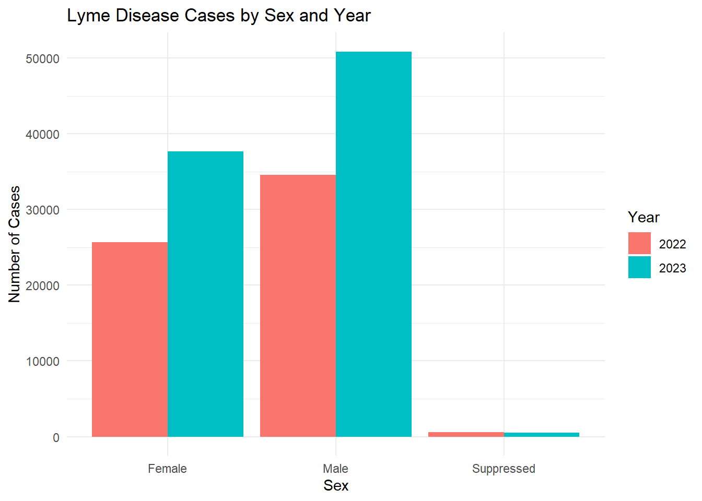
age_year_summary <- lymedisease_cleandata %>%group_by(Year, Age_cat_yrs) %>%summarise(count =n(), .groups ="drop")# Plotggplot(age_year_summary, aes(x = Age_cat_yrs, y = count, fill =as.factor(Year))) +geom_bar(stat ="identity", position ="dodge") +labs(title ="Lyme Disease Cases by Age Group and Year",x ="Age Group (Years)",y ="Number of Cases",fill ="Year" ) +theme_minimal() +theme(axis.text.x =element_text(angle =45, hjust =1))
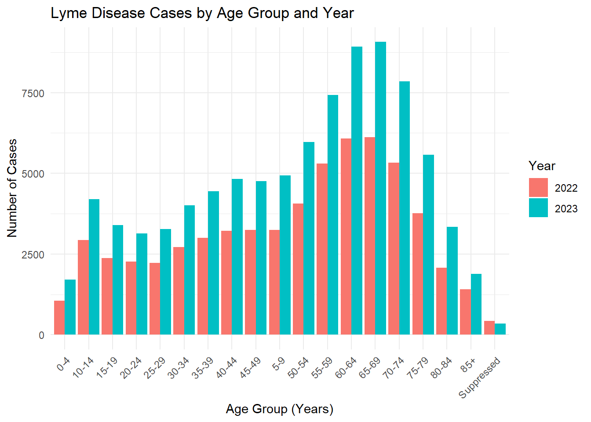
race_year_summary <- lymedisease_cleandata %>%group_by(Year, Race) %>%summarise(count =n(), .groups ="drop")# Plotggplot(race_year_summary, aes(x = Race, y = count, fill =as.factor(Year))) +geom_bar(stat ="identity", position ="dodge") +labs(title ="Lyme Disease Cases by Race and Year",x ="Race",y ="Number of Cases",fill ="Year" ) +theme_minimal() +theme(axis.text.x =element_text(angle =45, hjust =1))
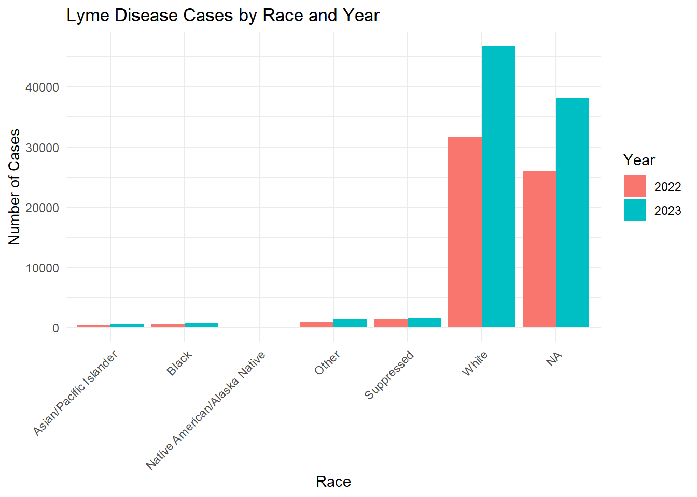
From these figures, we see that the number of confirmed or probable cases of Lyme disease increased from 2022 to 2023.
Synthetic Data Generation
This section was contirbuted by Talia C. Swanson
Creating Your Synthetic Dataset
——Chat GPT was used to understand why code would not preview correctly missing dataset creation ——
We will first begin with the steps to ensure that the vraibles, observations, and overview of our data looks good.
set.seed(123)n <-nrow(lymedisease_cleandata)# This will ensure the synthetic data set contains the same number of observations as the original Lyme dataset#
# This will geneate synthetic data for each variable of your choice simulate_cat <-function(data, varname, n) { probs <-prop.table(table(data[[varname]]))sample(x =names(probs), # Categoriessize = n, # Synthetic data rowsreplace =TRUE, prob=probs # Observed probs )}
# Generate synthetic data for Year Year =sample(unique(lymedisease_cleandata$Year),size = n,replace =TRUE,prob =prop.table(table(lymedisease_cleandata$Year)) )
# Generate synthetic data for Case_status Case_status =sample(levels(lymedisease_cleandata$Case_status),size = n,replace =TRUE,prob =prop.table(table(lymedisease_cleandata$Case_status)) )
# Generate synthetic data for Sex Sex =sample(levels(lymedisease_cleandata$Sex),size = n,replace =TRUE,prob =prop.table(table(lymedisease_cleandata$Sex)) )
# Generate synthetic data for Age categories Age_cat_yrs =sample(levels(lymedisease_cleandata$Age_cat_yrs),size = n,replace =TRUE,prob =prop.table(table(lymedisease_cleandata$Age_cat_yrs)) )
# Generate synthetic data for Race Race =sample(levels(lymedisease_cleandata$Race),size = n,replace =TRUE,prob =prop.table(table(lymedisease_cleandata$Race)) )
#Combine all synthetic variables into a datasetlymedisease_synthetic <-data.frame( Year, Case_status, Sex, Age_cat_yrs, Race)
# Convert categorical variables back to factorslymedisease_synthetic <- lymedisease_synthetic %>%mutate(Year =as.factor(Year),Case_status =as.factor(Case_status),Sex =as.factor(Sex),Age_cat_yrs =as.factor(Age_cat_yrs),Race =as.factor(Race) )
# Look at first few rowshead(lymedisease_synthetic)
Year Case_status Sex Age_cat_yrs Race
1 2023 Probable Female 60-64 White
2 2022 Probable Male 65-69 White
3 2023 Probable Male 50-54 White
4 2022 Probable Male 60-64 White
5 2022 Probable Female 65-69 White
6 2023 Probable Male 65-69 White
# Check structure of synthetic datatsetglimpse(lymedisease_synthetic)
# Quick summary of synthetic datasetsummary(lymedisease_synthetic)
Year Case_status Sex Age_cat_yrs
2022:60835 Confirmed: 5277 Female :63582 65-69 :15414
2023:89052 Probable :144610 Male :85178 60-64 :15126
Suppressed: 1127 70-74 :13101
55-59 :12733
50-54 : 9985
75-79 : 9363
(Other):74165
Race
Asian/Pacific Islander : 1656
Black : 2233
Native American/Alaska Native: 139
Other : 4026
Suppressed : 4907
White :136926
Exploring Your Synthetic Data (singular variables)
Now we can explore and analyze the synthetic data in the same way as the original set. We will look at the distributions for each catergory by looking at their frequency. All graphs and visulizations are generated in hot pink to show distinction of my contribution.
summary_table_synth <- lymedisease_synthetic %>%#synthetic data markersummarise(total =n(),case_status_probable =sum(Case_status =="Probable"),case_status_confirmed =sum(Case_status =="Confirmed"),sex_male =sum(Sex =="Male"),sex_female =sum(Sex =="Female"),age_0_4 =sum(Age_cat_yrs =="0-4"),# ... other age categoriesrace_white =sum(Race =="White"),race_black =sum(Race =="Black or African American") )
summary_table_pct <- summary_table %>%# percents for easier analysis later #mutate(across(-total, ~ . / total *100))summary_table_pct
# Bar plot for case statusggplot(lymedisease_synthetic, aes(x = Case_status)) +geom_bar(fill ="hotpink") +labs(title ="Synthetic Case Status Distribution", x ="Case Status", y ="Count")
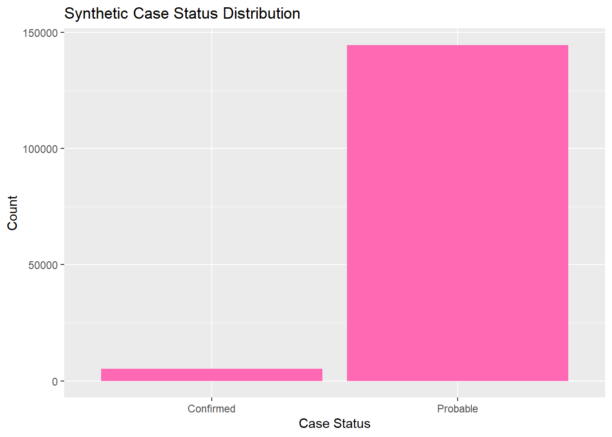
# Bar plot for sexggplot(lymedisease_synthetic, aes(x = Sex)) +geom_bar(fill ="hotpink") +labs(title ="Synthetic Sex Distribution", x ="Sex", y ="Count")
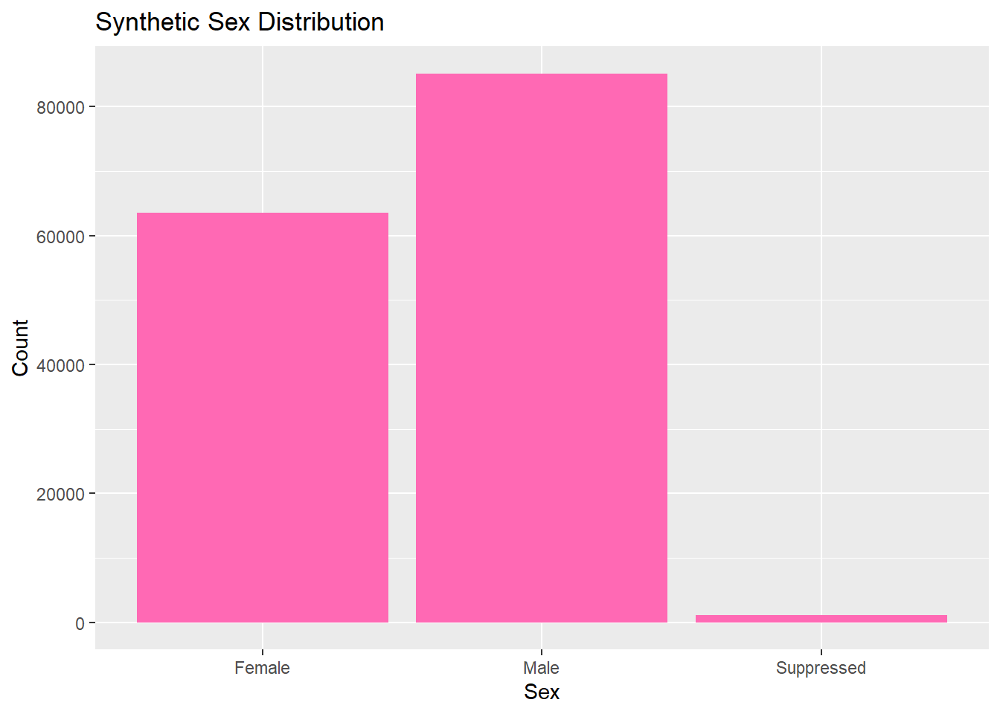
# Bar plot for ageggplot(lymedisease_synthetic, aes(x = Age_cat_yrs)) +geom_bar(fill ="hotpink") +labs(title ="Synthetic Age Distribution", x ="Age Category", y ="Count") +theme(axis.text.x =element_text(angle =45, hjust =1))
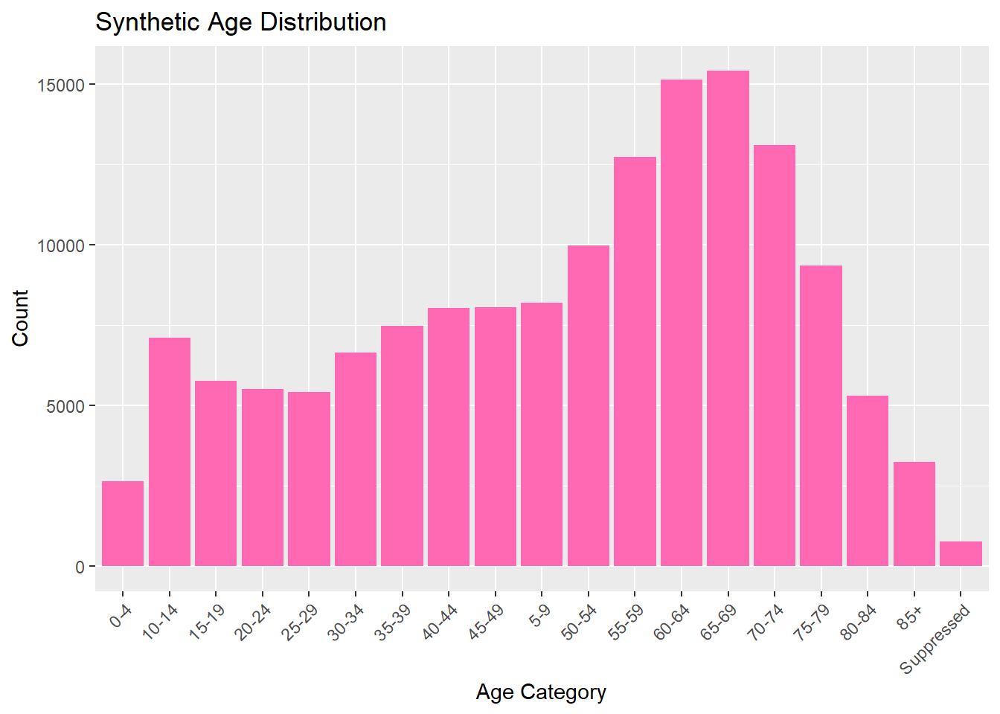
# Bar plot for raceggplot(lymedisease_synthetic, aes(x = Race)) +geom_bar(fill ="hotpink") +labs(title ="Synthetic Race Distribution", x ="Race", y ="Count") +theme(axis.text.x =element_text(angle =45, hjust =1))
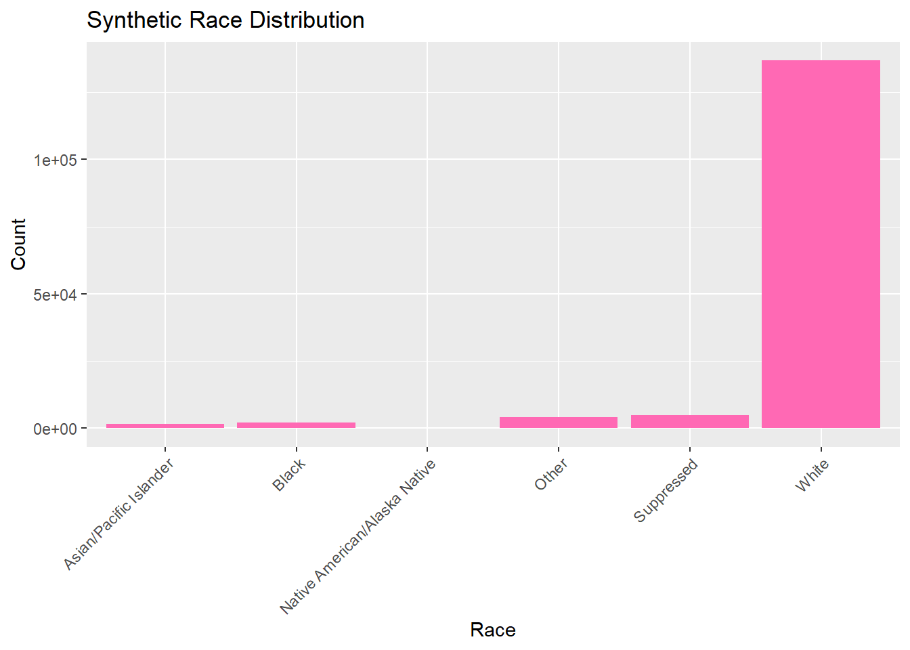
Exploring Your Synthetic Data (multiple variables)
—— Chat GPT was used to help generate the color change for the synthetic data——
Now we will combine multiple variables for analysis, looking at multiple variables that describe our Lyme dataset.
# Count synthetic cases by Sex and Year sex_year_summary <- lymedisease_synthetic %>%# synthetic data markergroup_by(Year, Sex) %>%summarise(count =n(), .groups ="drop")# Plotggplot(sex_year_summary, aes(x = Sex, y = count, fill =as.factor(Year))) +geom_bar(stat ="identity", position ="dodge") +labs(title ="Synthetic Lyme Disease Cases by Sex and Year",x ="Sex",y ="Number of Cases",fill ="Year" ) +scale_fill_manual(values=c("lightpink", "hotpink")) +# synthetic colorstheme_minimal()
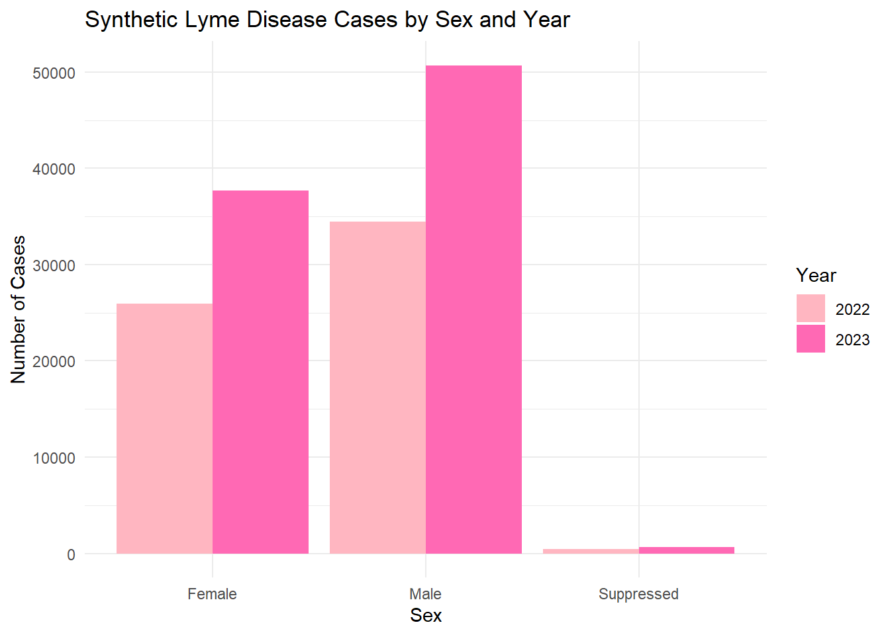
# Count synthetic cases by Age category and Yearage_year_summary <- lymedisease_synthetic %>%# Synthetic data markergroup_by(Year, Age_cat_yrs) %>%summarise(count =n(), .groups ="drop")# Plotggplot(age_year_summary, aes(x = Age_cat_yrs, y = count, fill =as.factor(Year))) +geom_bar(stat ="identity", position ="dodge") +labs(title ="Synthetic Lyme Disease Cases by Age Group and Year",x ="Age Group (Years)",y ="Number of Cases",fill ="Year" ) +scale_fill_manual(values=c("pink", "hotpink")) +# synthetic colorstheme_minimal() +theme(axis.text.x =element_text(angle =45, hjust =1))
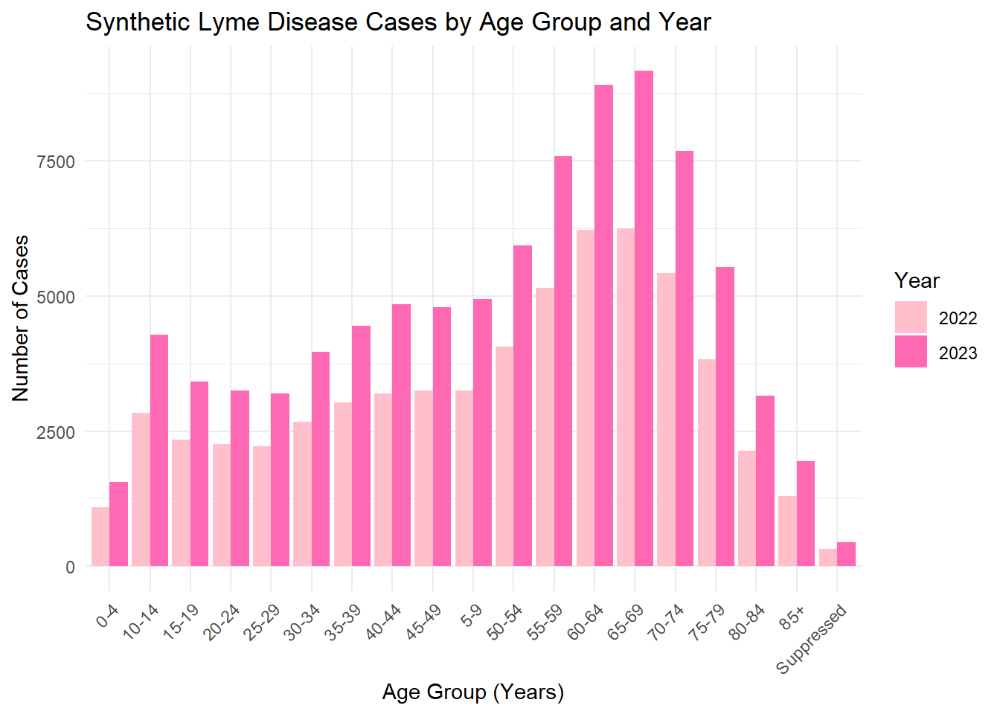
The synthetic dataset was generated to match the structure and distributions of the original cleaned Lyme disease data. Categorical variables (Year, Case_status, Sex, Age_cat_yrs, Race) were sampled. The exploratory analysis (summary tables and bar plots) shows that the synthetic data roughly mirrors the trends in the original data , maintain simulated values.